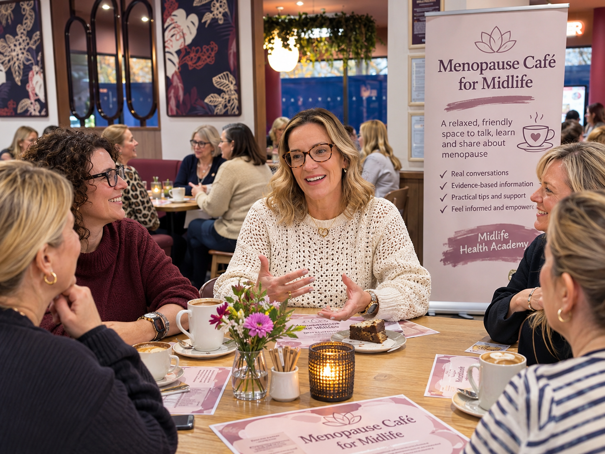

Menopause Cafés
Bring your community together over coffee.
A welcoming space for conversation

Menopause can often feel confusing, overwhelming or difficult to talk about. Menopause Cafés create a welcoming environment where people can come together, share experiences and learn more about hormone health.
Led by Lisa, these informal sessions combine evidence-based education with friendly conversation, creating a space where questions are encouraged and everyone feels comfortable taking part.
Perfect for cafés and community groups
Are you a café owner looking to offer something different for your customers?
Hosting a Menopause Café provides an opportunity to bring people together, attract new visitors and create meaningful conversations within your community.
You provide the venue and refreshments. Lisa brings the expertise, education and discussion.
What happens at a Menopause Café?
- Informal nurse-led discussion.
- Evidence-based information about menopause.
- Conversations around symptoms and hormone health.
- Discussion of HRT, treatment options and common myths.
- Opportunities to ask questions in a safe environment.
- A welcoming atmosphere where everyone can learn together.
Sessions are relaxed and conversational rather than formal presentations, making them ideal for community spaces and informal gatherings.
Why host a Menopause Café?
Menopause Cafés provide value for both individuals and businesses.
- Encourage open conversations about menopause.
- Help people access reliable information.
- Build stronger community connections.
- Create an additional reason for customers to visit.
- Provide a supportive and inclusive experience.
Hosting Information
Menopause Café Events
Enquire for Details
Events can be tailored to suit your venue, audience and requirements.
Contact Lisa to discuss availability and hosting opportunities.
Host a Menopause Café
If you're interested in hosting a Menopause Café at your venue or within your community, I'd love to hear from you.
Let's create a welcoming space where people can learn, connect and talk openly about menopause.
Email: midlifehealthacademy@outlook.com
WhatsApp: 07525 493874